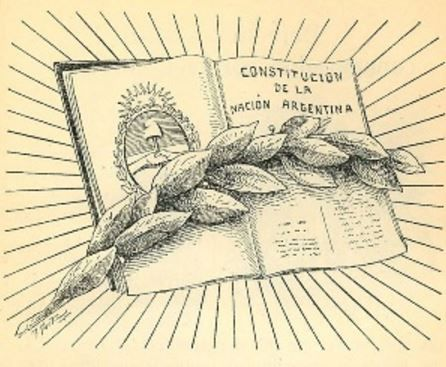

.png)
Institutos de Emergencia en la C.N.: "Intervención Federal"
A raíz de los hechos de público conocimiento vinculados a la disputa judicial por la presencialidad de clases entre el Gobierno Nacional y la Ciudad Autónoma de Buenos Aires, varias voces del Gobierno Nacional han deslizado la posibilidad de una Intervención Federal en la C.A.B.A. Una de esas voces ha sido la del ex Jefe de Gabinete de Ministros, Aníbal Fernández. En ese mismo sentido se ha expresado el constitucionalista Eduardo Barcesat.
No es la primera vez que durante el Gobierno de Alberto Fernández se ha sugerido la aplicación de dicho instituto. Sin ir más lejos, hace algunos meses se hablaba de la posibilidad de intervenir la Provincia de Formosa, lo cual obedecía a la sistemática violación de DDHH por parte del Gobierno de Guildo Infrán . En ese sentido, el Constitucionalista Gil Domínguez creía que existían "motivos suficientes para dar una discusión seria" sobre una intervención en Formosa.
En ese sentido, la Coalición Cívica oportunamente ha presentado un Proyecto de Ley para intervenir la provincia de Formosa, el cual no ha tenido tratamiento legislativo:
Hoy pedimos la intervención federal de Formosa, tal como lo habia anunciado la Dra Carrio
— Monica Frade (@MonicaFradeok) January 20, 2021
No podemos permitie que Infran se apodere de los habitantes de formosa pic.twitter.com/W4HNrF9Wz2
Para acceder al Proyecto con sus fundamentos, clickeá acá -> Proyecto
Sin perjuicio de ello, lo que nos ataña en la presente entrada no es una discusión político/partidaria sobre el conflicto Fernández - Larreta, sino más bien dar un desarrollo dogmático del instituto de la "Intervención Federal" en el marco de nuestra Constitución Nacional.
¿QUÉ ES LA INTERVENCIÓN FEDERAL?
Concepto y finalidad. En primer lugar, cabe referirnos al art. 5 de la C.N., el cual ha sido denominado por Bidart Campos como la "Garantía Federal", mediante la cual el Gobierno Federal se constituye como el garante de la autonomía, goce y ejercicio de las instituciones de las Provincias que conforman a la Argentina.
En tal contexto, junto con el Estado de Sitio, la Intervención Federal se caracteriza por ser el segundo "Instituto de Emergencia" que nuestro texto constitucional contempla, mediante el cual el Estado Federal, en caso de grave emergencia, interfiere en la autonomía de las provincias a los efectos de garantizar la forma de gobierno republicana. Es por ello que el Dr. Bidart Campos señalaba que "(...) la propia intervención federal es el recurso extremo y el remedio tal vez mas duro que se depara como garantía federal".
Se encuentra regulada en el art. 6 de nuestra Constitución Nacional, el cual reza lo siguiente:
"El Gobierno federal interviene en el territorio de las provincias para garantir la forma republicana de gobierno, o repeler invasiones exteriores, y a requisición de sus autoridades constituidas para sostenerlas o restablecerlas, si hubiesen sido depuestas por la sedición, o por invasión de otra provincia.".
Para una definición más dogmática podemos recurrir a la ofrecida por el reconocido constitucionalista Miguel Ángel Ekmekdjian, quien definía a la Intervención Federal como "(...) un acto complejo, de naturaleza política, emanado del gobierno federal, por el cual se limita o suspende temporariamente y en forma coactiva la autonomía provincial".
La primera impresión de esta definición nos enseña que la Intervención Federal implica una intromisión en la autonomía de la provincia intervenida, extremo al cual solamente debe llegarse una vez que hayan sido agotados todos los recursos ordinarios que existan a los fines de solventar la situación problemática. Un ejemplo de ello puede ser una correcta coordinación entre el Presidente de la Nación y su Ministro del Interior junto con el Gobernador y autoridades de la Provincia en conflicto, en miras a solucionar el problema que pone el peligro a la forma republicana de gobierno.
Causales y requisitos. La Intervención Federal puede ser requerida sin pedio de la Provincia o con pedido de las autoridades provinciales, de acuerdo a lo que a continuación se detalla:
I. Sin pedido de la Provincia. La Intervención Federal puede ser declarada por el Estado Federal sin pedido de parte, en los siguientes casos:
a. Para garantizar la forma republicana de gobierno o; b. Para repeler invasiones extranjeras
En en caso a, la misma se produce cuando hay una afectación de la libertad y la igualdad de los habitantes, o cuando se desconoce la división de poderes, o cuando se altera el orden público. Se requiere que la perturbación sea manifiesta y grave, y no de tiempo a otras alternativas. Por tal motivo, es la causal mas difusa y difícil de determinar, correspondiendo por ende al poder político la definición de su alcance.
En cambio, en el supuesto b, la causal es más fácil de detectar, y más difícil a su vez que ocurra en los hechos. Sin embargo, es una herramienta que el convencional constituyente ha conferido al Estado Federal.
En estos casos, no es necesario ni la autorización ni la solicitud de la Provincia, dado que en estos supuestos es el Estado Federal quien, de manera unilateral, decide la intervención federal.
II. Con pedido de las autoridades constituidas provinciales. La Intervención Federal puede ser declara a solicitud de las autoridades constituidos provinciales (v. gr., los 3 poderes del Estado, como también un eventual órgano constituyente) en los siguientes casos:
a. Para sostenerlas o; b. Reestablecerlas cuando hay sedición o invasión de otra provincia.
En estos supuestos, las Provincias podrán requerir al Estado Federal la intervención cuando se produzcan algunos de estos casos.
En todos los casos se designará a un Interventor Federal. Si bien la norma constitucional referida a la Intervención no menciona dicha figura, la misma resulta necesaria a los fines de reestablecer el orden perturbado. Explican los Dres. Bidart Campos y Gabino Ziulu que dicha figura necesariamente siempre será designada por el P.E. en virtud de las atribuciones que le confiere el inc. 7 del art. 99 en el apartado que dice por sí solo nombra y remueve [...] los empleados cuyo nombramiento no esté reglado de otra forma por esta Constitución" ". Por tal motivo, y dado que la figura del interventor federal no ha sido regulada en el art. 6, resulta indudable que el Presidente deba elegirlo. En ese marco, el Interventor deberá adecuar sus conductas a las pautas de la C.N., los fines de la Intervención Federal en concreto y a las instrucciones impartidas por el P.E.
Sin perjuicio de ello, y conforme el Dictamen Preliminar del Consejo para la Consolidación para la Democracia (el cual fue creado por Raúl Alfonsín entre 1983 y 1989), cabe mencionar que no siempre la intervención federal implica la sustitución de las autoridades locales, pues en ocasiones puede bastar con una acción mediadora a fin de solucionar el conflicto local. En ese caso, la función de la intervención es tuitiva y no coercitiva.
Asimismo, si bien el texto constitucional nada dice al respecto, considero menester que el acto que declare la intervención de la Provincia contemple una clausula que establezca un período de cierto tiempo de duración de la intervención (v. gr., 180 días).
Competencia para decretar la Intervención Federal. Con relación a este apartado, es muy importante realizar una interpretación armónica los arts. 6, 75 inc. 31 y 99 inc. 20 del plexo constitucional.
En ese sentido, corresponde siempre al Congreso Nacional la sanción de una Ley que declare la Intervención Federal en una Provincia. Por lo tanto, el Poder Ejecutivo (es decir, el Pste. de la Nación) solamente podrá decretar la Intervención Federal de manera unilateral cuando el Congreso se encuentre de receso (esto es, entre el 30 de noviembre y el primero de marzo). Sin perjuicio de ello, el órgano legislativo federal deberá ser convocado simultáneamente para la aprobación o rechazo de la intervención, tramite que, a mi entender, debe realizarse con la mayor celeridad posible, a los fines de producirse un correcto control entre los Poderes del Estado.
Considero este punto muy importante, dado que resulta imperiosamente necesaria la declaración de Intervención Federal por parte del Congreso Nacional, órgano de deliberación democrático en el cual la población deposito su voz y voluntad. En esa línea de pensamiento, tratándose de la Intervención un acto complejo y que debería responder a situación de emergencia, considero que esto es fundamental para una toma de decisiones democrática, libre de cualquier tipo de autoritarismo unilateral.
En esa dirección, considero que frente al receso del Congreso y la existencia de una imperiosa necesidad de intervenir una provincia, a los fines de brindar una respuesta lo más democrática posible, el Pste. de la Nación debería convocar a sesiones extraordinarias en virtud de sus atribuciones conferidas por el inc. 9 del art. 99 de la C.N.
Con respecto a la mayoría legislativa necesaria para sancionar una Ley que disponga la intervención Federal, toda vez que la C.N. nada dice al respecto, se ha entendido que se requiere mayoría simple, es decir, el voto afirmativo de la mitad más uno de los legisladores presentes. En esa línea de pensamientos se ha expresado el Dr. Gil Dominguez, quien ha dicho que “(...) para aprobar la ley de intervención no hace falta una mayoría agravada”.
Finalmente, cabe señalar que, pese a diversos intentos fallidos, el Congreso de la Nación no ha sancionado una Ley que reglamente la aplicación de la Intervención Federal, al igual que el Estado de Sitio, extremo que considero debería discutirse en algún momento de nuestra historia, para así darle mayor seguridad jurídica y previsibilidad a este remedio de excepción.
Palabras finales. Sin intención de hacer un análisis partidario sobre la procedencia o no de la Intervención Federal a la C.A.B.A., considero que es muy importante que exista un riguroso consenso político previo a la discusión parlamentaria de medidas tan extremas como estas. Asimismo, considero que deben respetarse a rajatabla los procedimientos legislativos requeridos para este asunto, estableciendo un plazo de tiempo determinado de intervención y designado a un interventor ad hoc que, en la medida de lo posible, sea consensuado por el P.E. y el Congreso Federal, sin olvidarnos que es el Pste. quien tiene la atribución constitucional de designarlo a su libre albedrio. Finalmente, la Ley o acto administrativo que declare la Intervención Federal debe consignar de manera precisa los causales de la intervención, ausente de cualquier tipo de termino ambiguo o vago, entendiendo que se está en presencia de un remedio constitucional de carácter excepcional.
Historia del Divorcio en Argentina
A lo largo de nuesta historia, el divorcio ha sufrido muchos cambios ¡Pasá y enterate como fue su evolución histórica en Argentina!
NOTICIA EN DESARROLLO
Indulto vs. Amnistía en Argentina ¿Cuál es la diferencia?
Entérate aca cuáles son las principales diferencias en ambas propuestas, y cuál podría ser su impacto en la Sociedad.
NOTICIA EN DESARROLLO